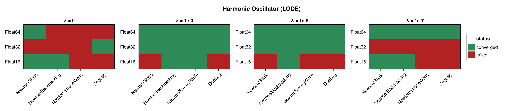
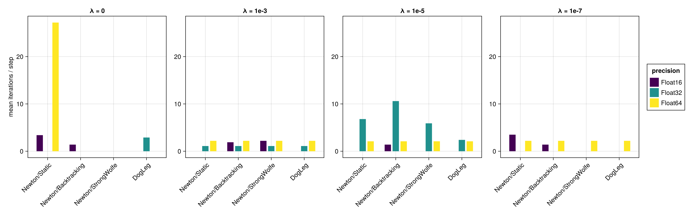
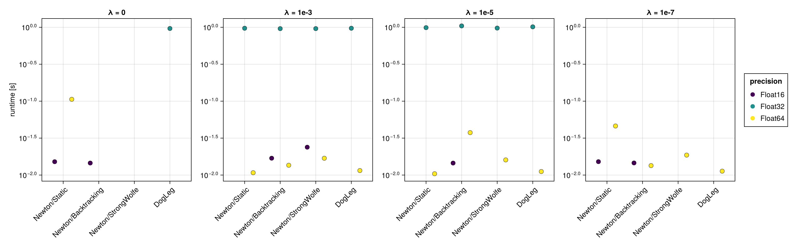
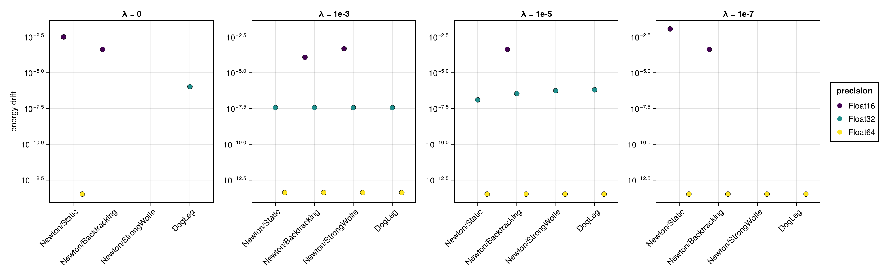
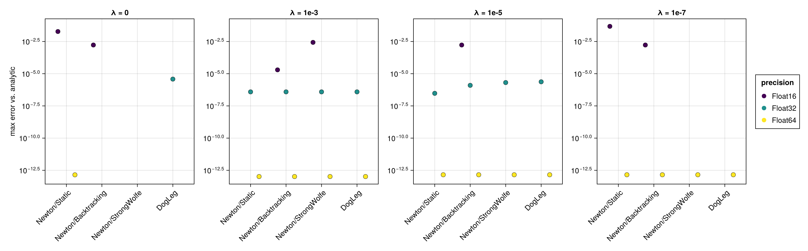
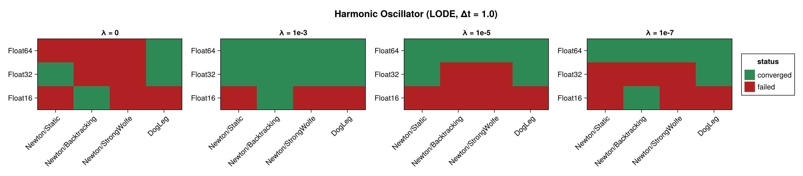
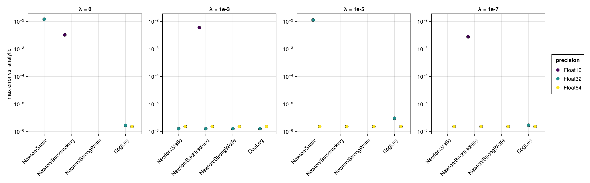
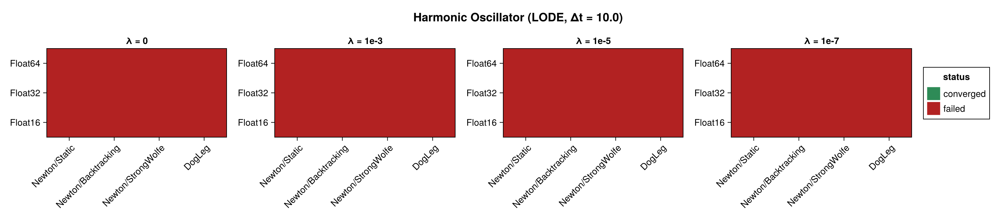
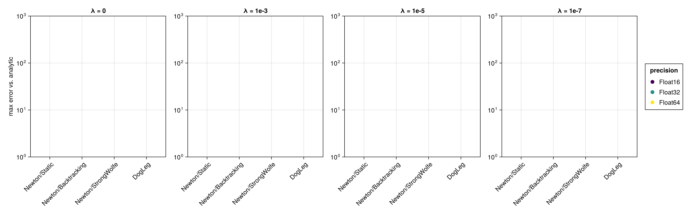

Harmonic Oscillator (Nonlinear Integrator)
This page benchmarks the neural-network variational integrator NonLinear_OneLayer_GML from NonlinearIntegrators.jl on the harmonic oscillator, built as a Lagrangian problem (lodeproblem). The integrator represents the trajectory over one time step with a one-layer network (S = 4 neurons, activation $x \mapsto \max(0,x)^3$) and enforces the discrete variational principle with an R = 8-point Gauss–Legendre quadrature; the network parameters are seeded with its built-in greedy (OGA1d) initial guess.
Unlike the implicit midpoint analyses, this sweep varies the nonlinear solver's regularization factor $\lambda$ (a Levenberg–Marquardt-style shift added to the Newton Jacobian diagonal) in place of the initial guess, because the network solve is near-singular — without regularization Newton does not converge. The swept options are:
| Dimension | Values |
|---|---|
| Precision | Float16, Float32, Float64 |
| Solver | Newton/Static, Newton/Backtracking, Newton/StrongWolfe, DogLeg |
| Regularization $\lambda$ | 0, 1e-3, 1e-5, 1e-7 |
Each run integrates ten time steps, and the three step sizes $\Delta t = 0.1, 1.0, 10.0$ therefore span $(0,1)$, $(0,10)$ and $(0,100)$. The figures below panel by $\lambda$; within each panel the solver configurations are on the x-axis and the precisions are distinguished by colour.
The benchmark is regenerated at documentation build time with a single, fast timing pass. See the driver script scripts/nonlinear_harmonic_oscillator.jl for accurate BenchmarkTools measurements.
using SolverBenchmark
spec = harmonic_oscillator_lode_spec(timespan = (0.0, 1.0), timestep = 0.1)
df = run_nonlinear_benchmark(spec; timing = :quick, max_iterations = 100,
verbose = false, quiet = true)┌ Warning: You should only use `Gradient` together with array expressions! Maybe you wanted to use `SymbolicPullback`.
└ @ SymbolicNeuralNetworks ~/.julia/packages/SymbolicNeuralNetworks/FCFV3/src/derivatives/gradient.jl:72
┌ Warning: You should only use `Gradient` together with array expressions! Maybe you wanted to use `SymbolicPullback`.
└ @ SymbolicNeuralNetworks ~/.julia/packages/SymbolicNeuralNetworks/FCFV3/src/derivatives/gradient.jl:72
┌ Warning: You should only use `Gradient` together with array expressions! Maybe you wanted to use `SymbolicPullback`.
└ @ SymbolicNeuralNetworks ~/.julia/packages/SymbolicNeuralNetworks/FCFV3/src/derivatives/gradient.jl:72
┌ Warning: You should only use `Gradient` together with array expressions! Maybe you wanted to use `SymbolicPullback`.
└ @ SymbolicNeuralNetworks ~/.julia/packages/SymbolicNeuralNetworks/FCFV3/src/derivatives/gradient.jl:72
┌ Warning: You should only use `Gradient` together with array expressions! Maybe you wanted to use `SymbolicPullback`.
└ @ SymbolicNeuralNetworks ~/.julia/packages/SymbolicNeuralNetworks/FCFV3/src/derivatives/gradient.jl:72
┌ Warning: You should only use `Gradient` together with array expressions! Maybe you wanted to use `SymbolicPullback`.
└ @ SymbolicNeuralNetworks ~/.julia/packages/SymbolicNeuralNetworks/FCFV3/src/derivatives/gradient.jl:72Convergence
Which combinations reached the solver tolerance at every time step (green), and which failed (red):
plot_convergence(df; panelcol = :regularization, title = "Harmonic Oscillator (LODE)")
Nonlinear iterations
Mean number of nonlinear-solver iterations per time step (converged runs only):
plot_iterations(df; panelcol = :regularization)
Run time
plot_runtime(df; panelcol = :regularization)
Energy drift
Drift of the conserved energy $|H(t_\text{end}) - H(0)|$:
plot_energy_drift(df; panelcol = :regularization)
Accuracy
Maximum error against the analytic solution:
plot_accuracy(df; panelcol = :regularization)
Discussion
- Regularization is essential. With $\lambda = 0$ the Newton iteration does not converge for any solver — the network parameterization makes the Jacobian near-singular, so the step stalls at a residual floor well above the tolerance. A small $\lambda$ ($10^{-3}$ to $10^{-7}$) regularizes the Jacobian and the solve converges in only a few iterations per step, to an accuracy of $\approx 10^{-13}$ at
Float64. - The choice of line search barely matters once regularization is on: all of
Static,Backtracking,StrongWolfeandDogLegbehave almost identically, because the regularized Newton step is already close to optimal. Float16fails. Half precision cannot factor the (regularized) network Jacobian — the LU factorization is singular — so no configuration converges atFloat16, regardless of $\lambda$. These runs are recorded as failures.Float32reaches its residual floor ($\approx 10^{-5}$) and is reported as converged under the relaxed tolerance used for this problem ($256\,\varepsilon$); its accuracy against the analytic solution is $\approx 10^{-6}$.- The OGA dictionary size (
dict_amount) has little effect on accuracy here: a few hundred candidate neurons match the reference's several hundred thousand, while being markedly faster. The dictionary is assembled in double precision, so it neither limits nor rescues the reduced-precision runs.
Results table
markdown_table(summary_table(df; panelcol = :regularization))| precision | solver_label | regularization | converged | iterations_mean | runtime_s | max_residual | energy_drift | accuracy |
|---|---|---|---|---|---|---|---|---|
| Float16 | Newton/Static | λ = 0 | ✓ | 3.4 | 0.0152 | 0.24 | 0.00317 | 0.0188 |
| Float16 | Newton/Static | λ = 1e-3 | ✗ | — | — | — | — | — |
| Float16 | Newton/Static | λ = 1e-5 | ✗ | — | — | — | — | — |
| Float16 | Newton/Static | λ = 1e-7 | ✓ | 3.5 | 0.0152 | 0.24 | 0.0117 | 0.0476 |
| Float16 | Newton/Backtracking | λ = 0 | ✓ | 1.4 | 0.0145 | 0.174 | 0.000427 | 0.00169 |
| Float16 | Newton/Backtracking | λ = 1e-3 | ✓ | 1.9 | 0.0169 | 0.175 | 0.000122 | 1.99e-05 |
| Float16 | Newton/Backtracking | λ = 1e-5 | ✓ | 1.4 | 0.0145 | 0.174 | 0.000427 | 0.00169 |
| Float16 | Newton/Backtracking | λ = 1e-7 | ✓ | 1.4 | 0.0146 | 0.174 | 0.000427 | 0.00169 |
| Float16 | Newton/StrongWolfe | λ = 0 | ✗ | — | — | — | — | — |
| Float16 | Newton/StrongWolfe | λ = 1e-3 | ✓ | 2.2 | 0.0238 | 0.214 | 0.000488 | 0.00271 |
| Float16 | Newton/StrongWolfe | λ = 1e-5 | ✗ | — | — | — | — | — |
| Float16 | Newton/StrongWolfe | λ = 1e-7 | ✗ | — | — | — | — | — |
| Float16 | DogLeg | λ = 0 | ✗ | — | — | — | — | — |
| Float16 | DogLeg | λ = 1e-3 | ✗ | — | — | — | — | — |
| Float16 | DogLeg | λ = 1e-5 | ✗ | — | — | — | — | — |
| Float16 | DogLeg | λ = 1e-7 | ✗ | — | — | — | — | — |
| Float32 | Newton/Static | λ = 0 | ✗ | — | — | — | — | — |
| Float32 | Newton/Static | λ = 1e-3 | ✓ | 1.1 | 0.97 | 2.38e-05 | 3.73e-08 | 3.89e-07 |
| Float32 | Newton/Static | λ = 1e-5 | ✓ | 6.8 | 0.989 | 2.41e-05 | 1.27e-07 | 3e-07 |
| Float32 | Newton/Static | λ = 1e-7 | ✗ | 31.1 | 1.02 | 2.65e+07 | — | — |
| Float32 | Newton/Backtracking | λ = 0 | ✗ | 23 | 1.13 | 6.02e-05 | — | — |
| Float32 | Newton/Backtracking | λ = 1e-3 | ✓ | 1.1 | 0.959 | 2.38e-05 | 3.73e-08 | 3.89e-07 |
| Float32 | Newton/Backtracking | λ = 1e-5 | ✓ | 10.6 | 1.04 | 3.03e-05 | 3.46e-07 | 1.25e-06 |
| Float32 | Newton/Backtracking | λ = 1e-7 | ✗ | 22.5 | 1.11 | 4.43e-05 | — | — |
| Float32 | Newton/StrongWolfe | λ = 0 | ✗ | 11.1 | 1.07 | 3.22e-05 | — | — |
| Float32 | Newton/StrongWolfe | λ = 1e-3 | ✓ | 1.1 | 0.959 | 2.38e-05 | 3.73e-08 | 3.89e-07 |
| Float32 | Newton/StrongWolfe | λ = 1e-5 | ✓ | 5.9 | 0.975 | 2.99e-05 | 5.66e-07 | 2.05e-06 |
| Float32 | Newton/StrongWolfe | λ = 1e-7 | ✗ | 31.1 | 1.22 | 6.68e-05 | — | — |
| Float32 | DogLeg | λ = 0 | ✓ | 2.9 | 0.963 | 3.01e-05 | 1.08e-06 | 3.81e-06 |
| Float32 | DogLeg | λ = 1e-3 | ✓ | 1.1 | 0.97 | 2.38e-05 | 3.73e-08 | 3.89e-07 |
| Float32 | DogLeg | λ = 1e-5 | ✓ | 2.4 | 1.01 | 2.96e-05 | 6.44e-07 | 2.35e-06 |
| Float32 | DogLeg | λ = 1e-7 | ✗ | 13.1 | 0.999 | 3.57e-05 | — | — |
| Float64 | Newton/Static | λ = 0 | ✓ | 27.2 | 0.106 | 5.53e-14 | 3.28e-14 | 1.41e-13 |
| Float64 | Newton/Static | λ = 1e-3 | ✓ | 2.2 | 0.0108 | 5.16e-14 | 4.18e-14 | 1.04e-13 |
| Float64 | Newton/Static | λ = 1e-5 | ✓ | 2.1 | 0.0104 | 4.82e-14 | 3.26e-14 | 1.43e-13 |
| Float64 | Newton/Static | λ = 1e-7 | ✓ | 2.2 | 0.0461 | 5.37e-14 | 3.26e-14 | 1.43e-13 |
| Float64 | Newton/Backtracking | λ = 0 | ✗ | 100 | 1.23 | 3.95e-12 | — | — |
| Float64 | Newton/Backtracking | λ = 1e-3 | ✓ | 2.2 | 0.0136 | 5.16e-14 | 4.18e-14 | 1.04e-13 |
| Float64 | Newton/Backtracking | λ = 1e-5 | ✓ | 2.1 | 0.0375 | 4.82e-14 | 3.26e-14 | 1.43e-13 |
| Float64 | Newton/Backtracking | λ = 1e-7 | ✓ | 2.2 | 0.0134 | 5.37e-14 | 3.26e-14 | 1.43e-13 |
| Float64 | Newton/StrongWolfe | λ = 0 | ✗ | 100 | 1.45 | 3.39e-12 | — | — |
| Float64 | Newton/StrongWolfe | λ = 1e-3 | ✓ | 2.2 | 0.0169 | 5.16e-14 | 4.18e-14 | 1.04e-13 |
| Float64 | Newton/StrongWolfe | λ = 1e-5 | ✓ | 2.1 | 0.016 | 4.82e-14 | 3.26e-14 | 1.43e-13 |
| Float64 | Newton/StrongWolfe | λ = 1e-7 | ✓ | 2.2 | 0.0186 | 5.37e-14 | 3.26e-14 | 1.43e-13 |
| Float64 | DogLeg | λ = 0 | ✗ | 100 | 0.669 | 3.29e-12 | — | — |
| Float64 | DogLeg | λ = 1e-3 | ✓ | 2.2 | 0.0115 | 5.16e-14 | 4.18e-14 | 1.04e-13 |
| Float64 | DogLeg | λ = 1e-5 | ✓ | 2.1 | 0.0112 | 4.82e-14 | 3.26e-14 | 1.43e-13 |
| Float64 | DogLeg | λ = 1e-7 | ✓ | 2.2 | 0.0113 | 5.37e-14 | 3.26e-14 | 1.43e-13 |
Coarse time step (Δt = 1.0)
The same benchmark with a ten-times-larger step (still ten steps, so $(0,10)$):
spec1 = harmonic_oscillator_lode_spec(timespan = (0.0, 10.0), timestep = 1.0)
df1 = run_nonlinear_benchmark(spec1; timing = :quick, max_iterations = 100,
verbose = false, quiet = true)┌ Warning: You should only use `Gradient` together with array expressions! Maybe you wanted to use `SymbolicPullback`.
└ @ SymbolicNeuralNetworks ~/.julia/packages/SymbolicNeuralNetworks/FCFV3/src/derivatives/gradient.jl:72
┌ Warning: You should only use `Gradient` together with array expressions! Maybe you wanted to use `SymbolicPullback`.
└ @ SymbolicNeuralNetworks ~/.julia/packages/SymbolicNeuralNetworks/FCFV3/src/derivatives/gradient.jl:72
┌ Warning: You should only use `Gradient` together with array expressions! Maybe you wanted to use `SymbolicPullback`.
└ @ SymbolicNeuralNetworks ~/.julia/packages/SymbolicNeuralNetworks/FCFV3/src/derivatives/gradient.jl:72
┌ Warning: You should only use `Gradient` together with array expressions! Maybe you wanted to use `SymbolicPullback`.
└ @ SymbolicNeuralNetworks ~/.julia/packages/SymbolicNeuralNetworks/FCFV3/src/derivatives/gradient.jl:72
┌ Warning: You should only use `Gradient` together with array expressions! Maybe you wanted to use `SymbolicPullback`.
└ @ SymbolicNeuralNetworks ~/.julia/packages/SymbolicNeuralNetworks/FCFV3/src/derivatives/gradient.jl:72
┌ Warning: You should only use `Gradient` together with array expressions! Maybe you wanted to use `SymbolicPullback`.
└ @ SymbolicNeuralNetworks ~/.julia/packages/SymbolicNeuralNetworks/FCFV3/src/derivatives/gradient.jl:72plot_convergence(df1; panelcol = :regularization, title = "Harmonic Oscillator (LODE, Δt = 1.0)")
plot_accuracy(df1; panelcol = :regularization)
markdown_table(summary_table(df1; panelcol = :regularization))| precision | solver_label | regularization | converged | iterations_mean | runtime_s | max_residual | energy_drift | accuracy |
|---|---|---|---|---|---|---|---|---|
| Float16 | Newton/Static | λ = 0 | ✗ | — | — | — | — | — |
| Float16 | Newton/Static | λ = 1e-3 | ✗ | — | — | — | — | — |
| Float16 | Newton/Static | λ = 1e-5 | ✗ | — | — | — | — | — |
| Float16 | Newton/Static | λ = 1e-7 | ✗ | — | — | — | — | — |
| Float16 | Newton/Backtracking | λ = 0 | ✓ | 1 | 0.0145 | 0.0785 | 0.000366 | 0.00326 |
| Float16 | Newton/Backtracking | λ = 1e-3 | ✓ | 1 | 0.0141 | 0.154 | 0.0011 | 0.00595 |
| Float16 | Newton/Backtracking | λ = 1e-5 | ✗ | — | — | — | — | — |
| Float16 | Newton/Backtracking | λ = 1e-7 | ✓ | 1 | 0.0137 | 0.0932 | 0.000214 | 0.00277 |
| Float16 | Newton/StrongWolfe | λ = 0 | ✗ | — | — | — | — | — |
| Float16 | Newton/StrongWolfe | λ = 1e-3 | ✗ | — | — | — | — | — |
| Float16 | Newton/StrongWolfe | λ = 1e-5 | ✗ | — | — | — | — | — |
| Float16 | Newton/StrongWolfe | λ = 1e-7 | ✗ | — | — | — | — | — |
| Float16 | DogLeg | λ = 0 | ✗ | — | — | — | — | — |
| Float16 | DogLeg | λ = 1e-3 | ✗ | — | — | — | — | — |
| Float16 | DogLeg | λ = 1e-5 | ✗ | — | — | — | — | — |
| Float16 | DogLeg | λ = 1e-7 | ✗ | — | — | — | — | — |
| Float32 | Newton/Static | λ = 0 | ✓ | 10.8 | 0.0211 | 2.94e-05 | 0.000642 | 0.0121 |
| Float32 | Newton/Static | λ = 1e-3 | ✓ | 1 | 0.0202 | 1.43e-05 | 1.02e-06 | 1.27e-06 |
| Float32 | Newton/Static | λ = 1e-5 | ✓ | 6.9 | 0.0167 | 2.93e-05 | 0.000461 | 0.0113 |
| Float32 | Newton/Static | λ = 1e-7 | ✗ | — | — | — | — | — |
| Float32 | Newton/Backtracking | λ = 0 | ✗ | 11.3 | 0.0835 | 4.5e-05 | — | — |
| Float32 | Newton/Backtracking | λ = 1e-3 | ✓ | 1 | 0.0212 | 1.43e-05 | 1.02e-06 | 1.27e-06 |
| Float32 | Newton/Backtracking | λ = 1e-5 | ✗ | 31.6 | 0.254 | 0.00031 | — | — |
| Float32 | Newton/Backtracking | λ = 1e-7 | ✗ | 24.2 | 0.281 | 0.000123 | — | — |
| Float32 | Newton/StrongWolfe | λ = 0 | ✗ | 31 | 0.231 | 6.39e-05 | — | — |
| Float32 | Newton/StrongWolfe | λ = 1e-3 | ✓ | 1 | 0.024 | 1.43e-05 | 1.02e-06 | 1.27e-06 |
| Float32 | Newton/StrongWolfe | λ = 1e-5 | ✗ | 50.7 | 0.387 | 0.000126 | — | — |
| Float32 | Newton/StrongWolfe | λ = 1e-7 | ✗ | 12.1 | 0.0939 | 5.28e-05 | — | — |
| Float32 | DogLeg | λ = 0 | ✓ | 1.9 | 0.0218 | 2.62e-05 | 8.27e-07 | 1.68e-06 |
| Float32 | DogLeg | λ = 1e-3 | ✓ | 1 | 0.0202 | 1.43e-05 | 1.02e-06 | 1.27e-06 |
| Float32 | DogLeg | λ = 1e-5 | ✓ | 2.5 | 0.0118 | 2.99e-05 | 1.24e-06 | 3.05e-06 |
| Float32 | DogLeg | λ = 1e-7 | ✓ | 1.9 | 0.011 | 2.95e-05 | 5.96e-08 | 1.71e-06 |
| Float64 | Newton/Static | λ = 0 | ✗ | — | — | — | — | — |
| Float64 | Newton/Static | λ = 1e-3 | ✓ | 4.9 | 0.0149 | 4.57e-14 | 4.15e-08 | 1.53e-06 |
| Float64 | Newton/Static | λ = 1e-5 | ✓ | 3.2 | 0.0129 | 1.8e-14 | 4.15e-08 | 1.53e-06 |
| Float64 | Newton/Static | λ = 1e-7 | ✓ | 3.2 | 0.0138 | 1.45e-14 | 4.15e-08 | 1.53e-06 |
| Float64 | Newton/Backtracking | λ = 0 | ✗ | 31.5 | 0.216 | 7.55e-11 | — | — |
| Float64 | Newton/Backtracking | λ = 1e-3 | ✓ | 4.9 | 0.0209 | 4.57e-14 | 4.15e-08 | 1.53e-06 |
| Float64 | Newton/Backtracking | λ = 1e-5 | ✓ | 3.2 | 0.0167 | 1.8e-14 | 4.15e-08 | 1.53e-06 |
| Float64 | Newton/Backtracking | λ = 1e-7 | ✓ | 3.2 | 0.0282 | 8.43e-15 | 4.15e-08 | 1.53e-06 |
| Float64 | Newton/StrongWolfe | λ = 0 | ✗ | 29.1 | 0.341 | 1.19e-10 | — | — |
| Float64 | Newton/StrongWolfe | λ = 1e-3 | ✓ | 4.9 | 0.0261 | 4.57e-14 | 4.15e-08 | 1.53e-06 |
| Float64 | Newton/StrongWolfe | λ = 1e-5 | ✓ | 3.2 | 0.0196 | 1.8e-14 | 4.15e-08 | 1.53e-06 |
| Float64 | Newton/StrongWolfe | λ = 1e-7 | ✓ | 3.2 | 0.0195 | 8.43e-15 | 4.15e-08 | 1.53e-06 |
| Float64 | DogLeg | λ = 0 | ✓ | 8.9 | 0.0289 | 1.88e-11 | 4.15e-08 | 1.53e-06 |
| Float64 | DogLeg | λ = 1e-3 | ✓ | 4.9 | 0.0153 | 4.57e-14 | 4.15e-08 | 1.53e-06 |
| Float64 | DogLeg | λ = 1e-5 | ✓ | 3.2 | 0.0273 | 1.8e-14 | 4.15e-08 | 1.53e-06 |
| Float64 | DogLeg | λ = 1e-7 | ✓ | 3.2 | 0.0127 | 1.17e-14 | 4.15e-08 | 1.53e-06 |
Large time step (Δt = 10.0)
With $\Delta t = 10.0$ the ten steps span $(0,100)$ — many oscillation periods per step, a demanding test for the network representation:
spec10 = harmonic_oscillator_lode_spec(timespan = (0.0, 100.0), timestep = 10.0)
df10 = run_nonlinear_benchmark(spec10; timing = :quick, max_iterations = 100,
verbose = false, quiet = true)┌ Warning: You should only use `Gradient` together with array expressions! Maybe you wanted to use `SymbolicPullback`.
└ @ SymbolicNeuralNetworks ~/.julia/packages/SymbolicNeuralNetworks/FCFV3/src/derivatives/gradient.jl:72
┌ Warning: You should only use `Gradient` together with array expressions! Maybe you wanted to use `SymbolicPullback`.
└ @ SymbolicNeuralNetworks ~/.julia/packages/SymbolicNeuralNetworks/FCFV3/src/derivatives/gradient.jl:72
┌ Warning: You should only use `Gradient` together with array expressions! Maybe you wanted to use `SymbolicPullback`.
└ @ SymbolicNeuralNetworks ~/.julia/packages/SymbolicNeuralNetworks/FCFV3/src/derivatives/gradient.jl:72
┌ Warning: You should only use `Gradient` together with array expressions! Maybe you wanted to use `SymbolicPullback`.
└ @ SymbolicNeuralNetworks ~/.julia/packages/SymbolicNeuralNetworks/FCFV3/src/derivatives/gradient.jl:72
┌ Warning: You should only use `Gradient` together with array expressions! Maybe you wanted to use `SymbolicPullback`.
└ @ SymbolicNeuralNetworks ~/.julia/packages/SymbolicNeuralNetworks/FCFV3/src/derivatives/gradient.jl:72
┌ Warning: You should only use `Gradient` together with array expressions! Maybe you wanted to use `SymbolicPullback`.
└ @ SymbolicNeuralNetworks ~/.julia/packages/SymbolicNeuralNetworks/FCFV3/src/derivatives/gradient.jl:72plot_convergence(df10; panelcol = :regularization, title = "Harmonic Oscillator (LODE, Δt = 10.0)")
plot_accuracy(df10; panelcol = :regularization)
markdown_table(summary_table(df10; panelcol = :regularization))| precision | solver_label | regularization | converged |
|---|---|---|---|
| Float16 | Newton/Static | λ = 0 | ✗ |
| Float16 | Newton/Static | λ = 1e-3 | ✗ |
| Float16 | Newton/Static | λ = 1e-5 | ✗ |
| Float16 | Newton/Static | λ = 1e-7 | ✗ |
| Float16 | Newton/Backtracking | λ = 0 | ✗ |
| Float16 | Newton/Backtracking | λ = 1e-3 | ✗ |
| Float16 | Newton/Backtracking | λ = 1e-5 | ✗ |
| Float16 | Newton/Backtracking | λ = 1e-7 | ✗ |
| Float16 | Newton/StrongWolfe | λ = 0 | ✗ |
| Float16 | Newton/StrongWolfe | λ = 1e-3 | ✗ |
| Float16 | Newton/StrongWolfe | λ = 1e-5 | ✗ |
| Float16 | Newton/StrongWolfe | λ = 1e-7 | ✗ |
| Float16 | DogLeg | λ = 0 | ✗ |
| Float16 | DogLeg | λ = 1e-3 | ✗ |
| Float16 | DogLeg | λ = 1e-5 | ✗ |
| Float16 | DogLeg | λ = 1e-7 | ✗ |
| Float32 | Newton/Static | λ = 0 | ✗ |
| Float32 | Newton/Static | λ = 1e-3 | ✗ |
| Float32 | Newton/Static | λ = 1e-5 | ✗ |
| Float32 | Newton/Static | λ = 1e-7 | ✗ |
| Float32 | Newton/Backtracking | λ = 0 | ✗ |
| Float32 | Newton/Backtracking | λ = 1e-3 | ✗ |
| Float32 | Newton/Backtracking | λ = 1e-5 | ✗ |
| Float32 | Newton/Backtracking | λ = 1e-7 | ✗ |
| Float32 | Newton/StrongWolfe | λ = 0 | ✗ |
| Float32 | Newton/StrongWolfe | λ = 1e-3 | ✗ |
| Float32 | Newton/StrongWolfe | λ = 1e-5 | ✗ |
| Float32 | Newton/StrongWolfe | λ = 1e-7 | ✗ |
| Float32 | DogLeg | λ = 0 | ✗ |
| Float32 | DogLeg | λ = 1e-3 | ✗ |
| Float32 | DogLeg | λ = 1e-5 | ✗ |
| Float32 | DogLeg | λ = 1e-7 | ✗ |
| Float64 | Newton/Static | λ = 0 | ✗ |
| Float64 | Newton/Static | λ = 1e-3 | ✗ |
| Float64 | Newton/Static | λ = 1e-5 | ✗ |
| Float64 | Newton/Static | λ = 1e-7 | ✗ |
| Float64 | Newton/Backtracking | λ = 0 | ✗ |
| Float64 | Newton/Backtracking | λ = 1e-3 | ✗ |
| Float64 | Newton/Backtracking | λ = 1e-5 | ✗ |
| Float64 | Newton/Backtracking | λ = 1e-7 | ✗ |
| Float64 | Newton/StrongWolfe | λ = 0 | ✗ |
| Float64 | Newton/StrongWolfe | λ = 1e-3 | ✗ |
| Float64 | Newton/StrongWolfe | λ = 1e-5 | ✗ |
| Float64 | Newton/StrongWolfe | λ = 1e-7 | ✗ |
| Float64 | DogLeg | λ = 0 | ✗ |
| Float64 | DogLeg | λ = 1e-3 | ✗ |
| Float64 | DogLeg | λ = 1e-5 | ✗ |
| Float64 | DogLeg | λ = 1e-7 | ✗ |